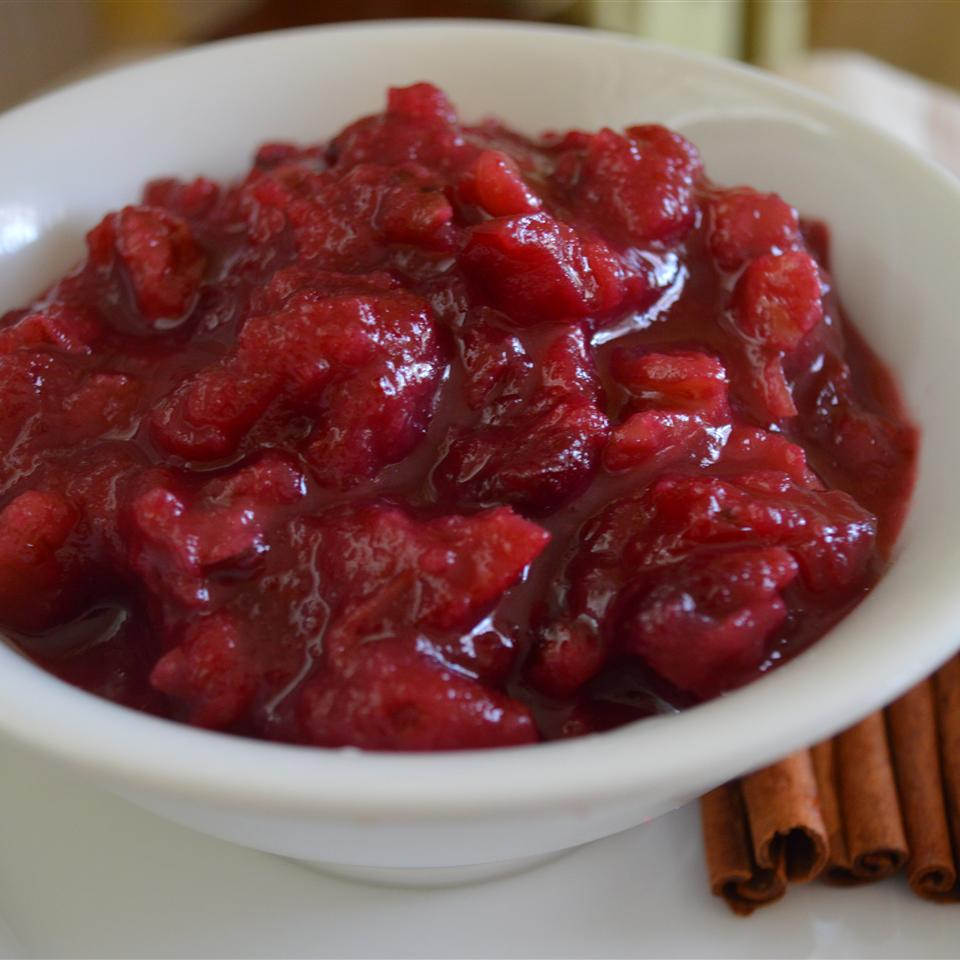

Cranberry Sauce

Description
This is a recipe for cranberry sauce. It includes maple syrup
to sweeten the sauce and walnuts to add texture.
Ingredients
- 1 (12 ounce) package fresh cranberries
- 3/4 cup freshly squeezed orange juice
- 1/2 cup dark maple syrup
- 1/4 cup white sugar
- 1 pinch of salt
- 1 cup chopped walnuts
Steps
- Place cranberries into large saucepan and stir in orange juice, maple syrup, sugar, and salt.
- Bringe sauce to a simmer and cook about 10 minutes until berries are cooked through and soft.
- Remove saucepan from heat and let cranberry sauce cool for about 5 minutes.
- Shake walnuts in dry skillet over medium heat, cooking about 5 minutes until golden brown then stir into cranberry sauce.